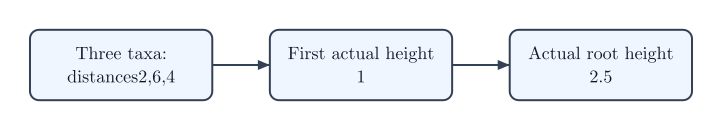
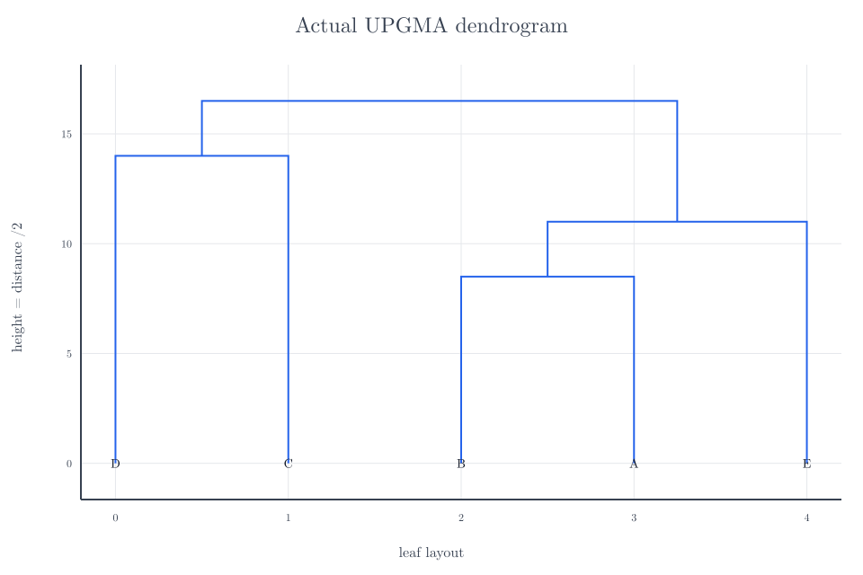
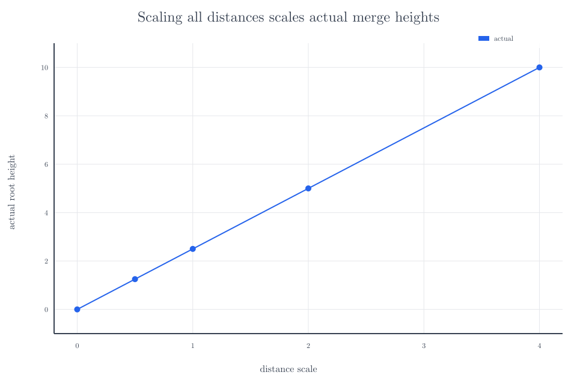
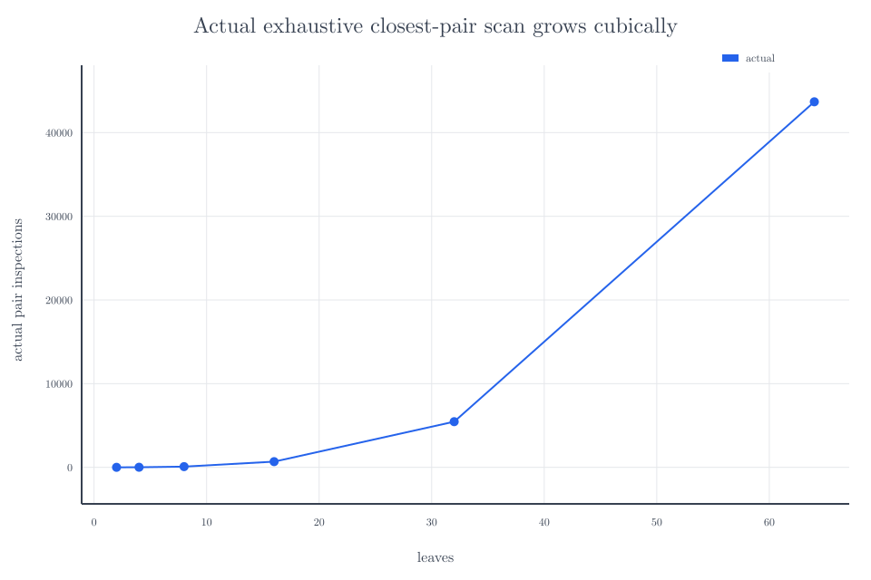

UPGMA: actual cluster sizes and weighted merges
Abstract
Pairwise distances between taxa can be summarized by a rooted average-linkage tree. UPGMA repeatedly joins the closest active clusters, using leaf counts to preserve the mean pairwise distance after each merge.
The method
If clusters A and B merge, d(A∪B,C)=(A|d(A,C)+|B|d(B,C))/(|A+B). Expanding each average proves that this is the average over every leaf pair, so unequal cluster sizes must not be weighted equally. Join height is d(A,B)/2. Every leaf starts at height0 and root-to-leaf branch lengths telescope to root height, giving an ultrametric output. The naive complete pair scan costs Σ_m m(m−1)/2=O(n³); it does not estimate whether the observed data obey a molecular clock.
Simple worked example
#include <dm/dm.hpp>
int main() {
namespace a = dm::algorithms;
namespace g = dm::graphics;
std::filesystem::create_directories("build");
auto r = a::upgma({{0, 2, 6}, {2, 0, 4}, {6, 4, 0}});
std::print("| left | right | left size | right size | actual height |\n|---:|---:|---:|---:|---:|\n");
for (auto m : r.merges)
std::print("|{}|{}|{}|{}|{}|\n", m.left, m.right, m.left_size,
m.right_size, m.height);
g::Diagram concept_diagram(48, 1100);
concept_diagram.node("n0", {0, 0}, "Three taxa: distances2,6,4");
concept_diagram.node("n1", {5, 0},
std::format("First actual height {}",
r.merges[0].height));
concept_diagram.node("n2", {10, 0},
std::format("Actual root height {}",
r.merges.back().height));
concept_diagram.edge("n0", "n1").edge("n1", "n2");
concept_diagram.save_svg("build/upgma_tiny.svg");
}| left | right | left size | right size | actual height |
|---|---|---|---|---|
| 0 | 1 | 1 | 1 | 1 |
| 2 | 3 | 1 | 2 | 2.5 |

The retained original experiment
#include <dm/dm.hpp>
int main() {
namespace a = dm::algorithms;
namespace g = dm::graphics;
std::filesystem::create_directories("build");
auto r =
a::upgma({{0, 17, 21, 31, 23}, {17, 0, 30, 34, 21}, {21, 30, 0, 28, 39},
{31, 34, 28, 0, 43}, {23, 21, 39, 43, 0}});
std::print("| node | left | right | sizes | height |\n|---:|---:|---:|---|---:|\n");
for (auto m : r.merges)
std::print("|{}|{}|{}|{},{}|{}|\n", m.id, m.left, m.right, m.left_size,
m.right_size, m.height);
auto p = a::upgma_plot(r, 5, {"A", "B", "C", "D", "E"});
p.save_svg("build/upgma_original.svg");
}| node | left | right | sizes | height |
|---|---|---|---|---|
| 5 | 0 | 1 | 1,1 | 8.5 |
| 6 | 4 | 5 | 1,2 | 11 |
| 7 | 2 | 3 | 1,1 | 14 |
| 8 | 6 | 7 | 3,2 | 16.5 |

Checking the theory and controls
#include <dm/dm.hpp>
int main() {
namespace a = dm::algorithms;
namespace g = dm::graphics;
std::filesystem::create_directories("build");
std::vector<double> x, y;
std::print("| scale | actual root height |\n|---:|---:|\n");
for (double scale : {0., .5, 1., 2., 4.}) {
auto r =
a::upgma({{0, 2 * scale, 6 * scale}, {2 * scale, 0, 4 * scale},
{6 * scale, 4 * scale, 0}});
std::print("|{}|{}|\n", scale, r.merges.back().height);
x.push_back(scale);
y.push_back(r.merges.back().height);
}
auto p = g::RPlot::create();
p.line(x, y, "actual", {37, 99, 235}, 2);
p.points(x, y, "", {37, 99, 235}, 5);
p.title("Scaling all distances scales actual merge heights").x_label(
"distance scale").y_label("actual root height");
p.save_svg("build/upgma_controls.svg");
}| scale | actual root height |
|---|---|
| 0 | 0 |
| 0.5 | 1.25 |
| 1 | 2.5 |
| 2 | 5 |
| 4 | 10 |

Sensitivity and selected work
#include <dm/dm.hpp>
int main() {
namespace a = dm::algorithms;
namespace g = dm::graphics;
std::filesystem::create_directories("build");
std::vector<double> x, y;
std::print("| leaves | actual pair checks | actual distance updates |\n|---:|---:|---:|\n");
for (int n : {2, 4, 8, 16, 32, 64}) {
std::vector<std::vector<double>> d(n, std::vector<double>(n));
for (int i = 0; i < n; ++i)
for (int j = 0; j < n; ++j)
d[i][j] = std::abs(i - j);
auto r = a::upgma(d);
std::print("|{}|{}|{}|\n", n, r.pair_checks, r.distance_updates);
x.push_back(n);
y.push_back(r.pair_checks);
}
auto p = g::RPlot::create();
p.line(x, y, "actual", {37, 99, 235}, 2);
p.points(x, y, "", {37, 99, 235}, 5);
p.title("Actual exhaustive closest-pair scan grows cubically").x_label(
"leaves").y_label("actual pair inspections");
p.save_svg("build/upgma_work.svg");
}| leaves | actual pair checks | actual distance updates |
|---|---|---|
| 2 | 1 | 0 |
| 4 | 10 | 3 |
| 8 | 84 | 21 |
| 16 | 680 | 105 |
| 32 | 5456 | 465 |
| 64 | 43680 | 1953 |

Interpretation and limits
Input must be square, finite, nonnegative, exactly symmetric and have zero diagonal. Empty and singleton inputs produce no joins. The500-leaf ceiling reflects the cubic implementation. Weighted means use widened intermediates. The dendrogram reads actual native merges and uses iterative layout.
The complete editable C++ programs save figures locally; results contain ordinary computed Markdown. Selected counters describe actual producer operations, excluding validation when stated.
References
- Sokal and Michener average-linkage method; the size-weighted recurrence and ultrametric construction are derived above.
Verified in the shared ten-document batch: 84 scoped native cases;20 directly
instrumented ASan/UBSan cases;45 executable public examples;127/127 definitions
across12 full scopes;10 hovers;2400 independent records/9344 checks;9 frozen
valid-input families plus the unchanged shared merge producer;11
checkout/installed standalone headers and linked ten-family consumer;40 executed
programs and40 inspected figures with both exports. Receipts:
build/mepml-conversion/batch-414-423/.